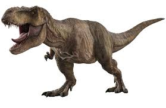
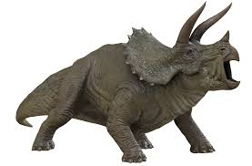
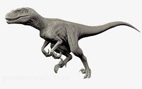

Bienvenido
Usa el menú para ver información e imágenes de distintos dinosaurios.
Aprendamos juntos sobre el mundo de los dinosaurios.
Tyrannosaurus Rex
El Tyrannosaurus rex (T-Rex) fue un gran depredador del Cretácico tardío.
- Tamaño: hasta 12 m
- Dieta: carnívoro
- Periodo: Cretácico
Triceratops
Triceratops era un herbívoro con tres cuernos y una gran placa ósea protectora.
- Tamaño: hasta 9 m
- Dieta: herbívoro
- Defensa: cuernos y placa
Velociraptor
Velociraptor era pequeño, ágil y se cree que cazaba en grupo.
- Tamaño: 1.5 - 2 m
- Dieta: carnívoro
- Características: ágil y posiblemente con plumas